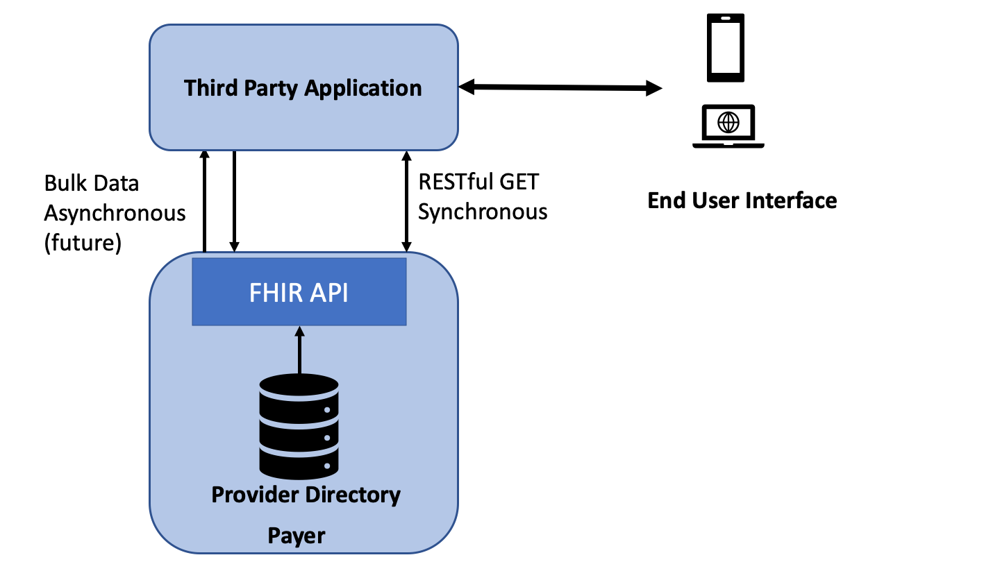
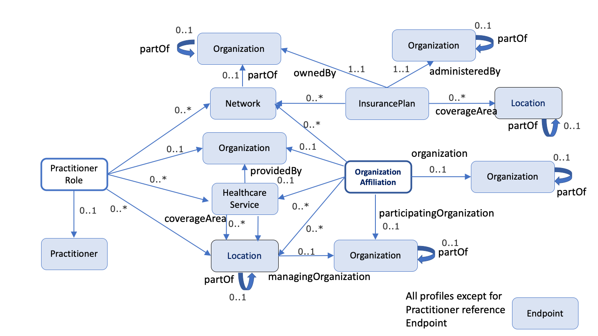
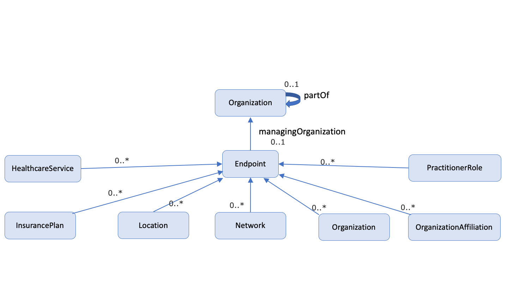

National Healthcare Directory
1.0.0 - draft
National Healthcare Directory
1.0.0 - draft
National Healthcare Directory - Local Development build (v1.0.0). See the Directory of published versions
This implementation guide defines a FHIR interface to a health insurer’s insurance plans, their associated networks, and the organizations and providers that participate in these networks. Publication of this data through a standard FHIR-based API will enable third parties to develop applications through which consumers and providers can query the participants in a payer’s network that may provide services that address their health care needs. Although there are multiple types and sources of providers’ directories, including provider organizations (i.e., a hospital listing all its physicians), government (i.e., listing of providers in Medicare), payers (i.e., a health plan’s provider network), and third-party entities (such as vendors that maintain provider directories), the focus of this implementation guide is on Payer Provider Directories.
The PDEX Payer Network (or NatlDir) Implementation Guide is based conceptually on the Validated Healthcare Directory Implementation Guide (VHDir IG), an international standard. The VHDir IG is based on FHIR Version 4.0. It was developed in cooperation with the Office of the National Coordinator for Health Information Technology (ONC) and Federal Health Architecture (FHA) with guidance from HL7 International, the Patient Administration Workgroup, and the HL7 US Realm Steering Committee.
The use of VhDir as the conceptual base for the profiles and extensions in the PDEX Payer Network Implementation Guide is intended to protect implementers of the NatlDir IG from rework/remapping when the VHDir concept reaches implementation, and becomes a source of data for the PDEX Payer Network. The primary changes from the VHDir IG are to:
The diagram below depicts the scope of this implementation guide (IG). The IG defines the API that exposes a payer’s provider network (including pharmacy locations where appropriate) for access by a consumer or provider application. This is a query only API (GET) and does not support PUT or POST.

This implementation guide was written for a US audience and profiles resources from US Core STU 3.1, where available (Practitioner, Organization and Location), and otherwise from R4 (OrganizationAffiliation, PractitionerRole, HealthCareService, Endpoint). The PractitionerRole profile from US Core was not used because it is over-constrained for use in a Provider Directory based on Payer information. The Network profile is based on USCore Organization, since there was no contradiction between the USCore profile and the NatlDir requirements. However, the NPI and CLIA identifier types, which are Must-Support, are clearly intended for provider organizations only and are not expected to be populated for other organization types. Alignment with VhDir is maintained by adapting VhDir content, where possible.
Provider directories play a critical role in enabling identification of individual providers and provider organizations, as well as characteristics about them. Provider directories support a variety of use cases, including:
This IG addresses two actors:
For anticipated query use cases, please see Representing and Searching Provider Data.
Note: the following diagrams provide a high-level view of the relationships between resources used in this IG. They do not necessarily reflect all of the relationships/references between resources.
 
This IG was developed by the MITRE Corporation under the direction of the authors using FHIR Shorthand syntax and the SUSHI tookit, a free, open source toolchain from the MITRE Corporation. Generous guidance on FHIR Shorthand and SUSHI was provided by Chris Moesel. The capability statements were developed with support of tools and generous guidance from Eric Haas, and benefited from critical review by Yengibar Manasyan.
| Name | |
|---|---|
| Troy Bergstrand | Troy.Bergstrand@bcidaho.com |
| Laurie Burckhardt | Laurie.Burckhardt@wpsic.com |
| Bob Dieterle | rdieterle@enablecare.us |
| Gail Kocher | Gail.Kocher@bcbsa.com |
| Saul A. Kravitz | saul@mitre.org |
| Robert McClure MD | rmcclure@mdpartners.com |
| Mary Kay McDaniel | MaryKay.McDaniel@cognosante.com |
IG © 2021+ HL7 Patient Administration Working Group. Package hl7.fhir.us.davinci-pdex-NatlDir#1.0.0 based on FHIR 4.0.1. Generated 2021-10-21
Links: Table of Contents |
QA Report
| Version History |
Search |
 |
Propose a change
|
Propose a change